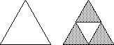
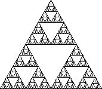
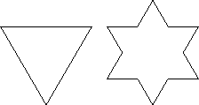
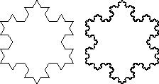
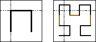

Fractals have become an extremely popular topic in math and computer science in recent years. Little else in these fields quite captivates like the beauty of regions of the Mandelbrot set or the striking realism of a fractally generated mountain range. It turns out that concepts very similar to what we today associate with the science of fractals were discovered quite a long time ago. It was in 1890 that Giuseppe Peano first postulated his Peano curve, and a year later, David Hilbert the Hilbert curve. However, not until the advent of the computer have we truly been able to explore the mysterious world of fractals. Today with the web and Java, fractals have virtually come knocking on your door. So sit back and enjoy the show.
Order, Chaos and Gaskets
The core fundaments of fractal geometry are the ideas of feedback and
iteration. The creation of most fractals involve applying some simple rule to
a set of geometric shapes or numbers and then repeating the process on the
results. This feedback loop can result in very unexpected results, given the
apparent simplicity of the rules followed for each iteration.
|
Basic step in constructing Sierpinski's gasket |
|  |
| Figure 1. |
|
Sierpinski's gasket after three iterations |
|  |
| Figure 2. |
The interesting thing about the Sierpinski gasket is that although it may seem sensible that we start with a triangle and end with a triangular structure, we can in fact start with any shape at all. Instead of using the process described above, choose an arbitrary image. Reduce its size by one third, arrange three of these images into a triangular formation, and repeat the process on this new composite image. Strangely enough, the Sierpinski gasket materializes no matter how twisted2 the image.
The algorithms described above for generating the gasket are simple and deterministic. One might even go as far as saying that, given a little thought, the figures generated by those algorithms are obvious and easily understandable. Consider for a moment then, an algorithm whose results are not so obvious. Start with three points that make up the vertices of a triangle. Now, choose a random point inside the triangle described by those three points. Let's call this point the cursor. The algorithm goes as follows: choose one of the three vertices at random and draw the point exactly half-way between the cursor and that vertex. The point that you've just drawn becomes the new cursor, and the algorithm is repeated. What sort of structure is described by this very chaotic algorithm? The answer to that is quite surprising3.
A very impressive turtle
The fractals first described by Peano and Hilbert are known as
curves. The funny thing about these curves are that they aren't exactly
curvy. Most curves are smooth and have the mathematical property of being
differentiable at every point along the curve. Fractal curves are quite
different, they tend not to be differentiable at any point along the
curve. At high enough iterations, they do in fact begin to look curvy, but
they are still composed entirely of straight lines (for which there are no
tangents.)
| First two iterations of the Koch island |
|  |
| Figure 3. |
| Koch island after many iterations |
|  |
| Figure 4. |
There are numerous curves that are constructed using this sort of a replacement method. For each iteration, a particular figure is replaced with a scaled down, multiplied version of itself.
| Generating a Hilbert curve |
|  |
| Figure 5. |
Wouldn't you know it, there's more than one way to generate these interesting curves. The biologist Aristid Lindenmayer described what are called L-systems; the graphical interpretation of which can be used to generate many interesting curves. The concept is simple and is essentially a subset of that endearing language Logo, more commonly know as turtle graphics.
We have a turtle who can walk around on a piece of paper either drawing a line as he walks, or not. He understands four simple commands and executes them according to two assumed parameters. The commands are abbreviated with letters:
F - move forward one step and draw while you're moving
f - move forward a step without drawing
+ - turn left by a fixed angle
- - turn right by a fixed angle
The two assumed parameters are the distance to travel in one step, and the angular distance to turn.
These simple rules allow us to instruct the turtle to draw a particular figure. To actually generate fractal curves with these programs, we must go one step further. Given a simple list of instructions for the turtle, we define production rules to apply to that list of instructions for each iteration of curve generation. These production rules are a set of substitutions to make on the instruction list. When these substitutions are made, we must scale the step distance by an amount specific to each program.
Here's an example:
| Angle: | 60 degrees |
| Instructions: | F |
| Production rules: | F ==> F+F--F+F |
| Step scale: | 1/3 |
The results4 generated by our friend the turtle should be a familiar sight by now. We can also generate the Hilbert curve5 with the following program:
| Angle: | 90 degrees |
| Abbreviations: | L == +F-F-F+ |
| R == -F+F+F- | |
| Instructions: | L |
| Production rules: | L ==> -LF+RFR+FL- |
| R ==> -LF+RFR+FL- | |
| Step scale: | 1/2 |
So why in the heck would a biologist develop a system that seems so
clearly suited for describing and drawing fractal curves? In this case, a picture6 is clearly
worth 10,000 words. 
-- Michael <mdb@go2net.com> just fell off the turnip truck.
| A few more cool biological7 L-systems8. | Source code to the applets written for this article (in
order of appearance): DBApplet.java, RSierpinski.java, PSierpinski.java, CSierpinski.java, Lsystem.java |